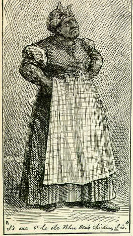

|
 Here's
how Rachel describes the auction at which she and her
children were sold: "An' when I heah dat dey gwyne to sell us all off at oction in Richmon', oh de good gracious! I know what dat mean! . . . Dey put chains on us an' put us on a stan' . . . an' all de people stood aroun', crowds an' crowds. An' dey 'd come up dah an' look at us all roun', an' squeeze our arm, an' make us git up an' walk, an' den say, 'Dis one too ole,' or 'Dis one lame,' or 'Dis one don't 'mount to much.' An' dey sole my ole man, an' took him away, an' dey begin to sell my chil'en an' take dem away, an' I begin to cry; an' de man say, 'Shet up yo' dam blubberin',' an' hit me on de mouf wid his han'. An' when de las' one was gone but my little Henry, I grab' him clost up to my breas' so, an' I ris up an' says, 'You shan't take him away,' I says; 'I'll kill de man dat fetches him!' I says. But my little Henry whisper an' say, 'I gwyne to run away, an' den I work an' buy yo' freedom.' Oh, bless de chile, he always so good! But dey got him -- dey got him, de men did; but I took and tear de clo'es mos' off of 'em, an' beat 'em over de head wid my chain; an' dey give it to me, too, but I didn't mine dat. "A True Story" was not illustrated when it first appeared in The Atlantic, but for its republication in Sketches, New and Old (1875) True Williams drew the above picture of "Aunt Rachel." The caption refers to catch phrase by which her son recognizes her 13 years after they'd been separated on the auction block. |